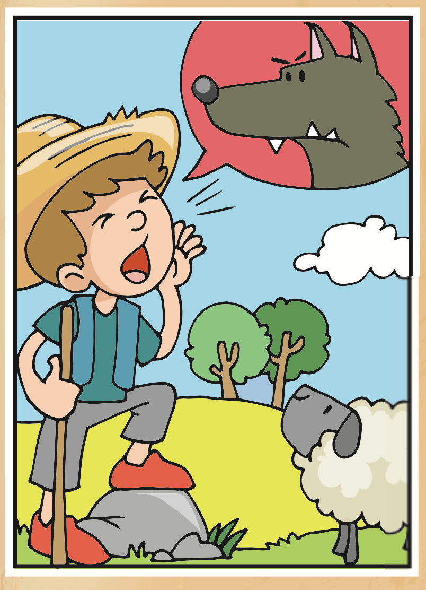

Identifico acotaciones y diálogos
Segundo acto
Lee con atención el siguiente fragmento de un guion de teatro. Selecciona todas las acotaciones del guion.
Pedro y el lobo
(Adaptación a teatro. Fragmento)
Pedro:
(Grita desesperado.)
¡Auxilio, viene el lobo por mis ovejas!
Entra corriendo un campesino al escenario y tropieza con una piedra en el camino.
Campesino:
(Preocupado.)
¿Dónde está el lobo?
Pedro:
(Riendo a carcajadas.)
¡Qué tonto eres! No hay ningún lobo.
Campesino:
(Muy enojado.)
Síguele con tus bromas y ya verás que el día que aparezca el lobo nadie te va a creer.
